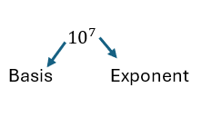
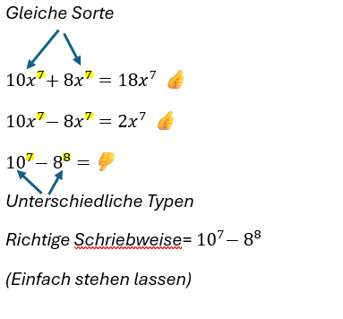

Zehnerpotenzen
Erklärung
Zehnerpotenzen werden verwendet, um sowohl sehr große als auch sehr kleine Zahlen in einer Kurzform übersichtlich aufzuschreiben.
Der Exponent gibt an, wie oft die Basis mit sich selbst multipliziert wird.
Besonderheiten:
- Eine Zahl hoch 0 ergibt immer 1 (z. B. 100 = 1)
- Jede Zahl hoch 1 ergibt wieder die Zahl selbst (z. B. 101 = 10)

107 = 10 000 000
10-7 = 0,0000001
Addition und Subtraktion
Man kann Potenzen nur addieren oder subtrahieren, wenn sowohl die Basen ALS AUCH die Exponenten absolut identisch sind.

Rechnen mit gleicher Basis
Multiplikation
Bei gleicher Basis werden die Exponenten addiert:
102 · 103 = 102+3 = 105
Division
Bei gleicher Basis werden die Exponenten subtrahiert:
25 : 22 = 25-2 = 23
Potenzieren von Potenzen
Wenn du eine Potenz nochmals potenzierst, werden die Exponenten miteinander multipliziert:
(25)2 = 25·2 = 210
Unterschiedliche Basis, gleicher Exponent
Wenn die Basen verschieden sind, aber der Exponent gleich ist, kannst du die Basen zusammenfassen:
Multiplikation: a5 · b5 = (a · b)5
Division: a5 : b5 = (a : b)5